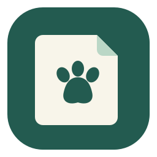
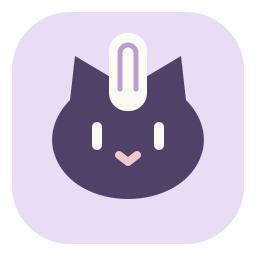
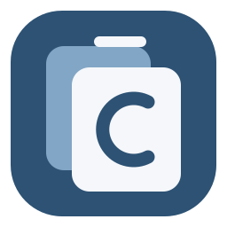

A / 爪印便签
内容工具 + 轻巧陪伴。
推荐作为主品牌。

ClawBoard / 下一版设计提案 01 · 2026.10.25安静地收好内容，需要时轻松找到。
简洁的界面，一点点可爱，熟悉的操作。
保留单击粘贴、删与拆相邻、底部短搜索框。来源和大小默认隐藏，开关集中在外观设置。界面提供清晰的键盘焦点，不用反复闪烁提醒。
完整竞品研究保存在项目私有目录；已筛选的方案、设计源文件和决策记录单独留档。正式重做前，用合成数据验证最小窗口、中文输入与双屏缩放。
可爱、清晰和小尺寸辨识度一起考虑。以下为可编辑的矢量提案；正式图标将另做托盘专用简化版本。
内容工具 + 轻巧陪伴。
推荐作为主品牌。

辨识度强，偏可爱。
小尺寸需进一步简化。

稳重、工具感强。
适合工作场景。
小图标独立绘制，不把复杂头像直接缩小；暂停和错误状态仍需专项设计与 Windows 验收。